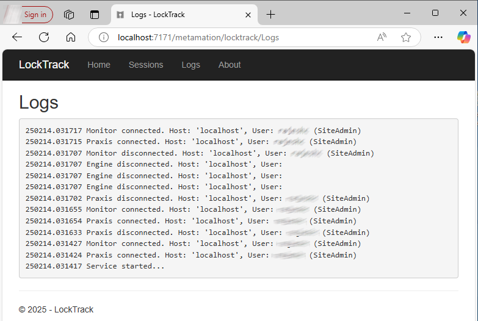

Installation du serveur
Suivez les instructions pour installer le serveur TruSmartCAM avec SQL.
|
Droits administrateur
Pour exécuter cette installation, l’utilisateur doit avoir des privilèges administratifs. |
-
Exécutez Setup.TruSmartCAM.<version>.exe pour commencer l’installation.
| Version est un numéro. |
-
Lisez l’accord de licence et choisissez I accept the agreement puis cliquez sur Suivant .

Étape 1 : Emplacement d’installation
-
Indiquez le répertoire d’installation ou acceptez la valeur par défaut
C:\Program Files\Metamation\Praxiset cliquez sur Suivant.-
C:\Program Files\Metamation\Praxis- Le dossier d’installation contiendra les dossiers suivants : Bin, MetaCAM, Samples et Tracker. -
C:\Program Data\Metamation- Le dossier de données contiendra les dossiers suivants : TruSmartCAM, TecZone et MetaCAM.
-

Étape 2 : Sélection des composants
| Type d’installation | Composants |
|---|---|
Full |
Server + Desktop client + Engine |
Client |
Desktop Client |
Server |
Server + Desktop client |
Station |
Choisit tous les terminaux de station comme TecZone, MetaCAM, RightAngle(Bend Controller), Vulcan(Laser Machine Controller) |
Custom |
Sélection selon le choix de l’utilisateur. |
-
Choisissez Full Installation. Sélectionnez Code Senders et Bend Code Senders dans TruSmartCAM Tools. Maintenant, le type d’installation change en Personnaliser. Cliquez sur Suivant.

Étape 3 : Choisir d’installer SQL Server
|
L’installation de SQL Express 2022 n’est nécessaire que pour le serveur TruSmartCAM. Cette option n’est pas disponible pour les installations Client et Sync. De plus, elle est cochée ON et installée pour la première fois et peut être ignorée par la suite. Si SQL est déjà installé sur le serveur TruSmartCAM, l’utilisateur peut ignorer l’étape 3. |
-
Dans Select Additional Tasks : Cliquez sur Install SQL Express et cliquez sur Suivant.
-
Dans Ready to Install : Résumez toutes les fonctionnalités d’installation et cliquez sur Install.

Étape 4 : Installation de SQL Server
Une fois les composants TruSmartCAM installés, l’installateur procède à l’installation de SQL server. Acceptez le contrat de licence pour continuer et installer SQL express avec les options par défaut.

Une fois l’installation terminée, cliquez sur Close et terminez l’installation.

| Selon la version de Windows, la fermeture de l’installation SQL peut inviter à un redémarrage. |
Étape 5 : Raccourcis du bureau Windows
-
Après l’installation de SQL, si le système ne redémarre pas, cochez la case Launch TruSmartCAM et cliquez sur Finish.
-
Si le système redémarre, lancez l’icône de raccourci TruSmartCAM sur le bureau ou tapez TruSmartCAM dans le programme de démarrage de Windows et Exécuter en tant qu’administrateur.
| Installation du serveur : Les icônes de raccourci TruSmartCAM et TruSmartCAM License sont disponibles sur le bureau. + Installation Client/SYNC : Seule l’icône de raccourci TruSmartCAM est disponible sur le bureau. |

Étape 6 : Enregistrement de la licence
-
Dans le champ Serial Number, tapez la clé série TruSmartCAM fournie par l’équipe de service Trumpf Metamation. Tapez <Nom de l’entreprise> dans le champ "Registered to" et l’e-mail. Cliquez sur OK.

|
Dans le cas où le pare-feu réseau bloque l’enregistrement de la licence ou qu’il n’y a pas d’internet sur le PC serveur TruSmartCAM, alors la licence TruSmartCAM se fait par activation hors ligne. Envoyez par e-mail le fichier Prax.request du dossier C:\ProgramData\Metamation\Praxis à l’équipe de service Trumpf Metamation. L’équipe Trumpf Metamation fournira le fichier Prax.lock qui doit être déposé dans ce dossier. |
Étape 7 : Configuration initiale unique
-
Tapez le nom de la base de données et définissez l’emplacement de stockage des données. Sélectionnez la case à cocher Utiliser SQL Server et sélectionnez le nom du serveur SQL pour se connecter à la base de données. Cliquez sur OK.

-
Le client de bureau TruSmartCAM s’ouvre en affichant Database Connection Succeeded en bas à gauche.
-
Les fichiers de configuration TruSmartCAM, TecZone et MetaCAM ont été créés avec les machines de configuration par défaut ou selon les machines de licence TruSmartCAM. La même configuration sera partagée sur tous les clients TruSmartCAM.

L’écran de bienvenue s’affiche avec le nom de connexion utilisateur Windows comme connexion et nom TruSmartCAM. Le premier utilisateur TruSmartCAM est considéré comme Site admin. Fournissez l’e-mail et le mot de passe. Cliquez sur OK .
Cochez la case Se souvenir de moi pour enregistrer les informations de connexion pour la prochaine fois. Décochez la case Se souvenir de moi pour afficher la boîte de dialogue de connexion et de mot de passe chaque fois que l’application TruSmartCAM est lancée.

Étape 8 : Connexion à TruSmartCAM
-
Fermez TruSmartCAM et rouvrez-le. Le système vous invite à entrer les identifiants de connexion TruSmartCAM.

-
Le nom d’utilisateur connecté est affiché à côté de l’icône utilisateur dans l’en-tête de l’application TruSmartCAM.

-
Lorsque vous survolez l’icône utilisateur, le système affiche :

-
Le rôle utilisateur (par exemple : Programmeur, Admin).
-
Un raccourci pour se déconnecter : Ctrl+L.
-
-
Cliquer sur l’icône utilisateur ouvre un menu qui vous permet de :

-
Editer les informations… - Mettre à jour les détails de votre profil.
-
Modification du mot de passe… - Changer le mot de passe de votre compte.
-
Se déconnecter - Se déconnecter de l’application.
-
Annuler - Fermer le menu sans apporter de modifications.
-
Étape 9 : Configuration de la machine Factory
-
Licence TruSmartCAM [Toutes les machines activent le bit de licence] : Par défaut, les machines TruSmartCAM et le matériau sont considérés comme configuration Factory.
-
Licence TruSmartCAM [Aucune démo et quelques bits de machine activés] : Ces quelques machines et le matériau par défaut sont considérés comme configuration Factory.
-
(Open → Import) une nouvelle pièce depuis
C:\Program Files\Metamation\Praxis\Samples\Partset vérifiez si la pièce est importée avec succès.

Note 1 : Moniteur TruSmartCAM
-
Moniteur TruSmartCAM avec installation du moteur (droits d’administrateur du site) :
-
Le moniteur TruSmartCAM avec le moteur ainsi que les droits d’administrateur du site TruSmartCAM aura les options suivantes :
-
Pousser la configuration TruSmartCAM, la configuration TecZone, MetaCAM sur tous les clients TruSmartCAM. Avoir également les droits de créer un nouvel utilisateur de connexion TruSmartCAM.
-
Show Agents affichera le total des moteurs disponibles pour effectuer les tâches d’automatisation qui sont conformes à la licence TruSmartCAM.
-
-

-
Moniteur TruSmartCAM sans installation du moteur (droits d’administrateur du site) :

-
Moniteur TruSmartCAM sans installation du moteur (droits non-administrateur du site) :

|
Le PC exécutant l’application TruSmartCAM doit avoir le composant moteur TruSmartCAM installé [PC serveur ou dans toute installation client]. Le PC avec le composant moteur TruSmartCAM installé doit fonctionner 24h/24 et 7j/7 pour effectuer toutes les tâches d’automatisation. |
Note 2 : Lock Tracker
-
Cliquez sur le raccourci TruSmartCAM License disponible sur le bureau du serveur TruSmartCAM. Alternativement, ouvrez l’URL http://localhost:7171/metamation/locktrack dans n’importe quel navigateur web.
Cela ouvrira le module Lock Tracker qui contient les informations de licence, les informations de session actuelles TruSmartCAM et le journal.
Page d’ACCUEIL LockTracker : Cela affiche le numéro de série TruSmartCAM, les informations d’expiration du numéro de série et les informations sur les bits de série disponibles.

Page SESSIONS de LockTracker : Informations de connexion actuelles du serveur TruSmartCAM comme le PC client de bureau TruSmartCAM, l’état de PMonitor, PEngine.

Page LOGS de LockTracker : Le démarrage et la déconnexion du client TruSmartCAM | le démarrage de Pmonitor et l’état de connexion/déconnexion de PEngine, etc., peuvent être consultés sur cette page de journaux.

Note 3 : OpenGL
-
L’application TruSmartCAM lors de l’ouverture se ferme immédiatement et aussi pmonitor n’est pas affiché dans la barre des tâches.
-
Cela représente un problème OpenGL.
-
Une autre façon de confirmer cela : Ouvrir C:\Program Files\Metamation\Praxis\Bin\Flux.exe qui affiche une boîte de dialogue d’erreur concernant le problème OpenGL.

-
Mettez à jour C:\ProgramData\Metamation\Praxis\Prax.ini, section options avec GLVersion=1 pour que l’application TruSmartCAM s’ouvre avec succès.
[Options]
GLVersion=1.0